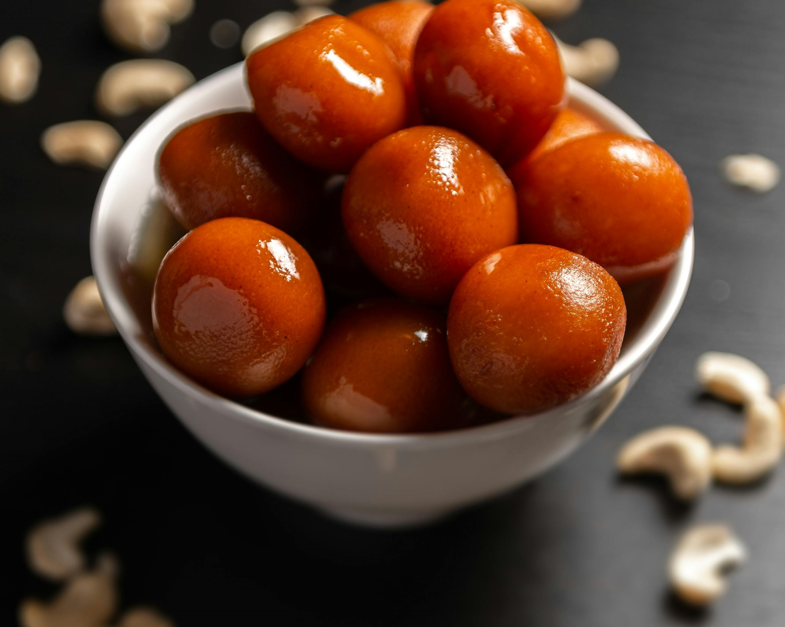
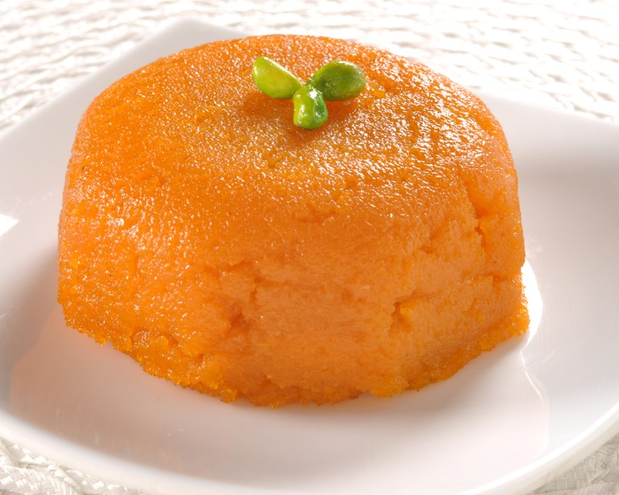

Gulab Jamun

Ingredients
- 1 cup milk powder
- 2 tbsp all-purpose flour
- 1/4 cup milk
- 1 tbsp ghee
- 1 cup sugar
- 1 cup water
- Oil for frying
Instructions
- Mix milk powder, flour, milk, and ghee to form a dough.
- Shape into small balls and fry in oil until golden brown.
- Boil sugar and water to make syrup, then soak the fried balls in syrup.
Details
Cooking Time: 45 minutes
Servings: 4
Watalappan

Ingredients
- 1 cup coconut milk
- 1 cup jaggery (or brown sugar)
- 4 eggs
- 1/4 tsp cardamom powder
- 1/4 tsp nutmeg powder
- Cashews for garnish
Instructions
- Beat eggs and mix with coconut milk, jaggery, cardamom, and nutmeg.
- Steam the mixture for 30 minutes until set.
- Garnish with cashews and serve.
Details
Cooking Time: 1 hour
Servings: 4
Kheer

Ingredients
- 1/2 cup rice
- 4 cups milk
- 1/4 cup sugar
- 2 tbsp chopped nuts (almonds, pistachios)
- 1/4 tsp cardamom powder
Instructions
- Cook rice in milk until soft.
- Add sugar, nuts, and cardamom, and simmer for 10 minutes.
- Serve chilled or warm.
Details
Cooking Time: 45 minutes
Servings: 4
Rava Kesari

Ingredients
- 1/2 cup semolina (rava)
- 1/4 cup ghee
- 1/2 cup sugar
- 1 1/2 cups water
- 1/4 tsp cardamom powder
- A few saffron strands
- Cashews and raisins for garnish
Instructions
- Roast semolina in ghee until golden.
- Boil water, add saffron and sugar, then mix into semolina.
- Cook until thickened, and garnish with cashews and raisins.
Details
Cooking Time: 30 minutes
Servings: 4
Coconut Burfi

Ingredients
- 2 cups grated coconut
- 1 1/2 cups sugar
- 1/2 cup milk
- 1/4 tsp cardamom powder
Instructions
- Heat milk and sugar until dissolved.
- Add coconut and cook until the mixture thickens.
- Pour into a greased tray, let it cool, then cut into squares.
Details
Cooking Time: 30 minutes
Servings: 4
Semolina Pudding

Ingredients
- 1/2 cup semolina
- 2 cups milk
- 1/4 cup sugar
- 1 tsp vanilla essence
- Chopped nuts for garnish
Instructions
- Roast semolina in a pan until golden brown.
- Add milk and sugar, cook until thickened.
- Stir in vanilla essence and serve garnished with nuts.
Details
Cooking Time: 30 minutes
Servings: 4
Carrot Halwa

Ingredients
- 4 cups grated carrots
- 2 cups milk
- 1/4 cup sugar
- 2 tbsp ghee
- 2 tbsp chopped nuts
Instructions
- Cook grated carrots in milk until soft.
- Add sugar and ghee, and cook until thickened.
- Garnish with nuts and serve.
Details
Cooking Time: 45 minutes
Servings: 4
Milk Toffee

Ingredients
- 1 can condensed milk
- 1/2 cup sugar
- 1/4 cup chopped cashews
- 1/4 tsp vanilla essence
Instructions
- Mix condensed milk and sugar in a pan and cook on low heat.
- Stir until the mixture thickens and leaves the sides of the pan.
- Add cashews and vanilla essence, pour into a greased tray, and cut into pieces once cool.
Details
Cooking Time: 45 minutes
Servings: 4
Payasam

Ingredients
- 1/2 cup vermicelli
- 2 cups milk
- 1/4 cup sugar
- 2 tbsp ghee
- 1/4 tsp cardamom powder
- Chopped nuts for garnish
Instructions
- Roast vermicelli in ghee until golden brown.
- Add milk and sugar, and cook until vermicelli is soft.
- Garnish with cardamom powder and nuts, serve warm.
Details
Cooking Time: 30 minutes
Servings: 4
Jalebi

Ingredients
- 1 cup all-purpose flour
- 2 tbsp yogurt
- 1/4 tsp baking powder
- 1 cup sugar
- 1/2 cup water
- Oil for frying
- A pinch of saffron (optional)
Instructions
- Make a batter with flour, yogurt, and water, then let it ferment for 4 hours.
- Make a sugar syrup by boiling sugar and water.
- Pipe the batter into hot oil in spiral shapes and fry until crispy.
- Soak the fried jalebis in sugar syrup and serve.
Details
Cooking Time: 1 hour
Servings: 4
Go Back